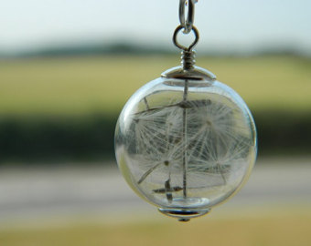
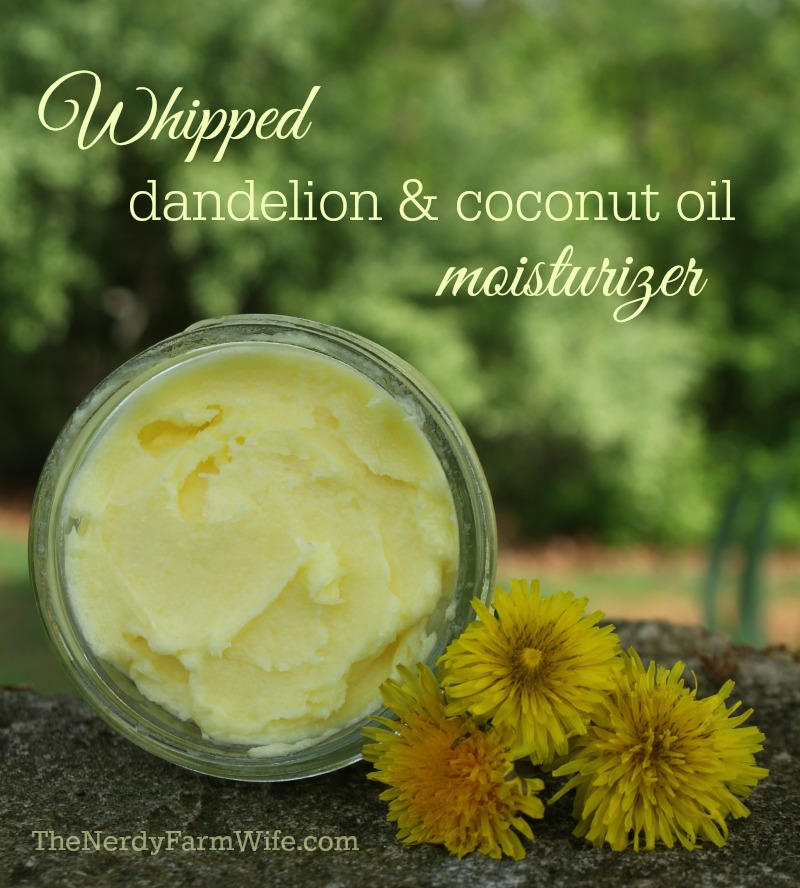

| Symbol
the word dandelion comes from the French dent de lion, lion tooth, referring to the jagged, toothlike leaves. The dandelion Latin name is Taraxacum Officinale, which means the official remedy for disorders.
|
|
|  | MAKE A WISH
one legend surrounding these flowers was that the tallest dandelion stalk that a child could find in the early spring will show how much taller they will grow in the coming year. Dandelions have also been used as a variation on the daisy petal plucking past time of he loves me, he loves me not If you blow on a white dandelion head and every seed scatters then you are loved. If some seeds still cling to the stalk, then your intended has reservations about the relationship..
|
|  | MEDICAL PROPERTIES
according to Maud Grieve A Modern Herbal, the dandelion has a number of medicinal properties. The sap from the stems can be used to cure warts, and the leaves can be dried and made into a tea to aid in digestion. A tincture brewed from the bright yellow flowers is believed to help with complaints related to the liver, and the root can be dried and brewed into a tea as well.
Some people use dandelions to enhancepsychic abilities. In his Encyclopedia of Magical Herbs, author Scott Cunninghamrecommends the use of dandelion roots in a tea to aid in divination and prophetic dreaming.
|
© 2015. All rights reversed!